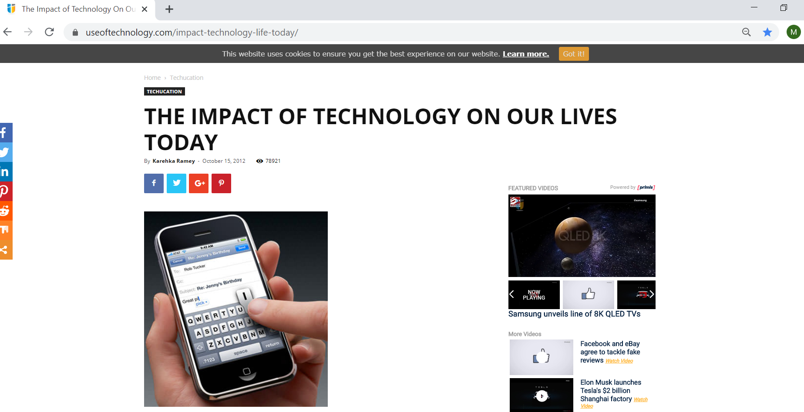
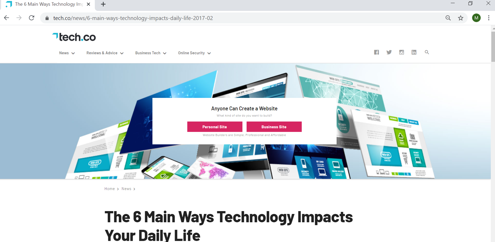
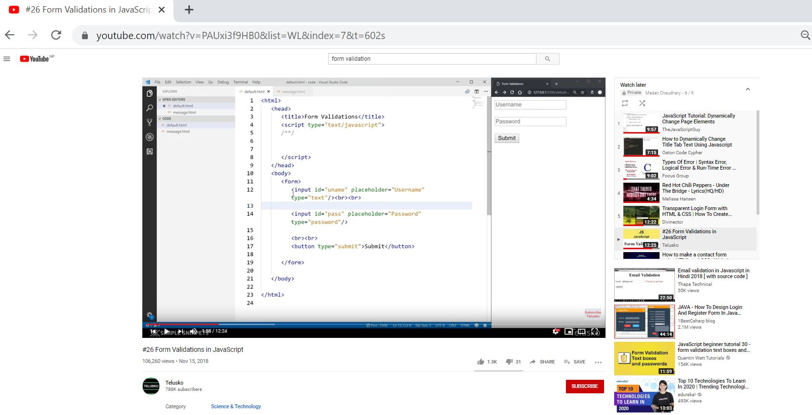

Research Section

This website helps in providing the best research information available in the area of technology and its far-reaching effects. It also provides information about the latest popular and most unusual gadgets on the market. I did a research on the content 'The impact of technology on our lives' with the help of this website.

This website provides latest news about Microsoft Company. It also provides information about the latest popular gadgets such as mobile phone, computer and laptop available in the market. I also did a research on the content 'The impact of technology on our lives' in this website

W3Schools is a web developer site, with tutorials and references on web development languages such as HTML, CSS, JavaScript, PHP, SQL, Python, jQuery, Java, C++, Bootstrap etc. It covers most aspects of programming.
This site was originally created in 1998 by Refsnes Data, a Norwegian software development and consulting company. The tags and many other components which I have used for the development of my personal website are referred to W3Schools.com.

This website contains tools for easy and quick wireframing. It has extensive docs to improve the software with frequent new releases and provides support via multiple channels. Here we can find beginner-to-expert tutorials on wireframe.

Telusko is a youtube channel which provides free programming tutorials from beginner to advanced level including Java, Advanced Java, Python, Android, Blockchain, JavaScript, Kotlin, Scala, Spring Framework, Hibernate, C programming, Data Structures, Networking, REST API, and many more.